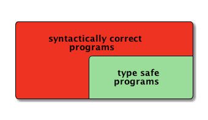

There are a number of undocumented but complex safety constraints on concurrency, resource consumption and runtime limits that are applied to code written in the SystemTap language. These constraints are not applied to embedded C code, so use embedded C code with extreme caution. Be especially careful when dereferencing pointers.
– SystemTap Specification

Consider this code
int result = someCheck(arguments); if (result) { // here the information about someCheck() // succeeded is lost for the compiler doSomething(); } else { doSomethingElse(); }